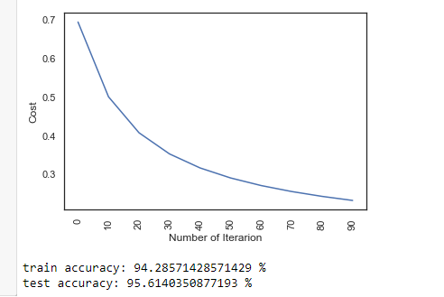
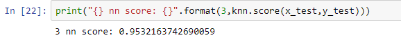

Metode kNN
Algoritma K-Nearest Neighbor (KNN)
1. Apa itu KNN?¶
Algoritme k-nearest neighbor (k-NN atau KNN) adalah sebuah metode untuk melakukan klasifikasi terhadap objek berdasarkan data pembelajaran yang jaraknya paling dekat dengan objek tersebut. Data pembelajaran diproyeksikan ke ruang berdimensi banyak, dimana masing-masing dimensi merepresentasikan fitur dari data
2. Tahapan Langkah Algoritma K-NN¶
- Menentukan parameter k (jumlah tetangga paling dekat).
- Menghitung kuadrat jarak eucliden objek terhadap data training yang diberikan.
- Mengurutkan hasil no 2 secara ascending (berurutan dari nilai tinggi ke rendah)
- Mengumpulkan kategori Y (Klasifikasi nearest neighbor berdasarkan nilai k)
- Dengan menggunakan kategori nearest neighbor yang paling mayoritas maka dapat dipredisikan kategori objek.
gambar diatas menunjukan penggunaan paket-paket ini untuk membantu memanipulasi data dan memvisualisasikan fitur / label serta mengukur seberapa baik kinerja model. Numpy dan Panda sangat membantu untuk memanipulasi dataframe serta kolom dan selnya. penggunaan matplotlib bersama dengan Seaborn untuk memvisualisasikan data.
gambar diatas berfungsi untuk mengambil data yang berada didalam file Downloads dengan nama file logistik
fungsi program diatas yaitu menampilkan 5 kolom pertama
fungsi program diatas yaitu menampilkan 5 kolom terakhir
gambar diatas menjelaskan data dan fitur statistik
gambar diatas bertujuan mengubah data kategorikal menjadi data numerik
gambar diatas bertujuan untuk menormalisasikan data

Untuk memvisualisasikan data, kita akan menggunakan matplotlib dan seaborn. Sebelum visualisasi jangan lupa menormalkan data.
program diatas berfungsi menjadikan hasil dari data menjadi histogram.
dan bins diatas berarti jumlah bilah pada gambar
program diatas berfungsi untuk membuat peta korelasi pada data

Sekarang data telah diproses dan diformat dengan benar, dan selanjutnya adalah memahami data umum yang di kerjakan serta tren dan asosiasi, kita dapat mulai membangun model . Kita dapat mengimpor berbagai pengklasifikasi dari sklearn.
kemudian lakukan inisialisasi data
kemudian perhitungan
1. Propagasi Maju dan Mundur 2. Dalam propagasi mundur kita akan menggunakan y_head yang ditemukan di progasi maju 3. Karena itu alih-alih menulis metode propagasi mundur, mari gabungkan propagasi maju dan propagasi mundur
lakukan pembaruan parameter membuat propagasi maju dan mundur dan menemukan biaya dan gradien perbarui (pelajari) parameter bobot dan bias

lakukan prediksi
- x_test adalah input untuk propagasi maju
- jika z lebih besar dari 0,5, prediksi kami adalah tanda satu (y_head = 1),
- jika z lebih kecil dari 0,5, prediksi kami adalah nol (y_head = 0),

lakukan pengujian pada split
dan kemmudian implementasikan dengan metode knn

3. Kelebihan dan Kekurangan dari Algoritma K-NN¶
Kelebihan
- Sangat nonlinear
- kNN merupakan salah satu algoritma (model) pembelajaran mesin yang bersifat nonparametrik. Pembahasan mengenai model parametrik dan model nonparametrik bisa menjadi artikel sendiri, namun secara singkat, definisi model nonparametrik adalah model yang tidak mengasumsikan apa-apa mengenai distribusi instance di dalam dataset. Model nonparametrik biasanya lebih sulit diinterpretasikan, namun salah satu kelebihannya adalah garis keputusan kelas yang dihasilkan model tersebut bisa jadi sangat fleksibel dan nonlinear.
- Mudah dipahami dan diimplementasikan
- Dari paparan yang diberikan dan penjelasan cara menghitung jarak dalam artikel ini, cukup jelas bahwa algoritma kNN mudah dipahami dan juga mudah dimplementasikan. Untuk mengklasifikasi instance x menggunakan kNN, kita cukup mendefinisikan fungsi untuk menghitung jarak antar-instance, menghitung jarak x dengan semua instance lainnya berdasarkan fungsi tersebut, dan menentukan kelas x sebagai kelas yang paling banyak muncul dalam k instance terdekat.
- Kekurangan
- Perlu menunjukkan parameter K (jumlah tetangga terdekat)
- Tidak menangani nilai hilang (missing value) secara implisit
- Jika terdapat nilai hilang pada satu atau lebih variabel dari suatu instance, perhitungan jarak instance tersebut dengan instance lainnya menjadi tidak terdefinisi. Bagaimana coba, menghitung jarak dalam ruang 3-dimensi jika salah satu dimensi hilang? Karenanya, sebelum menerapkan kNN kerap dilakukan imputasi untuk mengisi nilai-nilai hilang yang ada pada dataset. Contoh teknik imputasi yang paling umum adalah mengisi nilai hilang pada suatu variabel dengan nilai rata-rata variabel tersebut (mean imputation).
- Sensitif terhadap data pencilan (outlier)
- Seperti yang telah dijelaskan Ali pada artikel sebelumnya, kNN bisa jadi sangat fleksibel jika k kecil. Fleksibilitas ini mengakibatkan kNN cenderung sensitif terhadap data pencilan, khususnya pencilan yang terletak di “tengah-tengah” kelas yang berbeda. Lebih jelasnya, perhatikan ilustrasi di bawah. Pada gambar kiri, seluruh instance bisa diklasifikasikan dengan benar ke dalam kelas biru dan jingga. Tetapi, ketika ditambahkan instance biru di antara instance jingga, beberapa instance jingga menjadi salah terklasifikasi.Perlu dipilih k yang tepat untuk mengurangi dampak data pencilan dalam kNN.